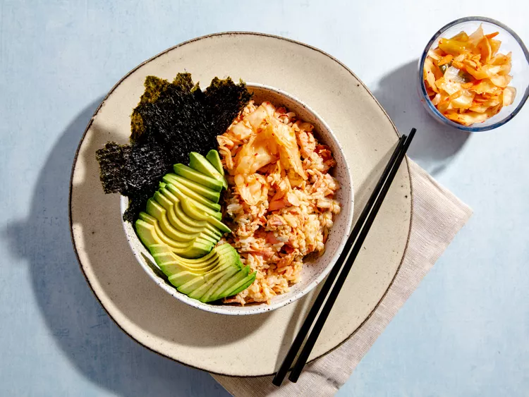

Salmon Bowl

Description
Last night's leftovers become lunch-time magic with this
TikTok-inspired Salmon Bowl created by Emily Mariko.
A quick trip in the microwave reheats the salmon and
rice (you'll love the accompanying ice cube trick),
then it's all about the toppings! Soy sauce, sriracha
and Kewpie mayonnaise get mixed in for a perfectly spicy sauce.
Pair it with umami-rich nori and kimchi, and you've got an epic lunch.
Ingredients
- 3 ounces cooked salmon, flaked
- 1 cup cooked white rice
- 1 tablespoon soy sauce
- ½ teaspoon sriracha or other hot sauce
- 2 teaspoons Japanese mayonnaise (such as Kewpie®)/li>
- 1 sheet nori, torn
- 1½ ripe avocado, sliced
- ¼ cup kimchi
Steps
-
Use a fork to flake salmon onto a microwave-safe plate. Top with rice and place 1 ice cube on top.
Cover with a microwave-safe lid and microwave at low power for 30 seconds.
Uncover and check temperature. If salmon and rice are not warm enough, cover and return to the microwave for another 30 seconds at low power.
-
Uncover and remove ice cube. Drizzle soy sauce, Sriracha and mayonnaise over the top and toss everything with a fork until well-combined.
-
Combine coleslaw mix, red bell pepper, green onions, and garlic in the wok; cook and stir over medium heat until slaw is slightly wilted, 1 to 2 minutes. Add sauce; mix to combine, about 1 minute.
Return turkey to the wok and stir until heated through, 2 to 3 minutes.
- Sprinkle sesame seeds over slaw before serving